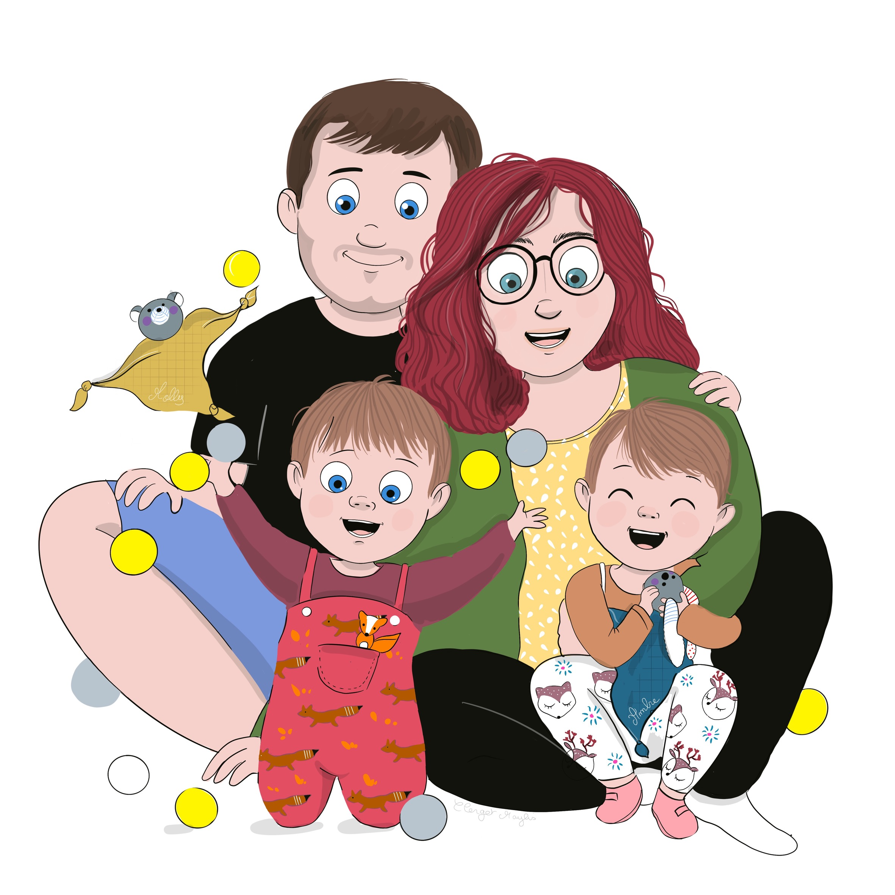
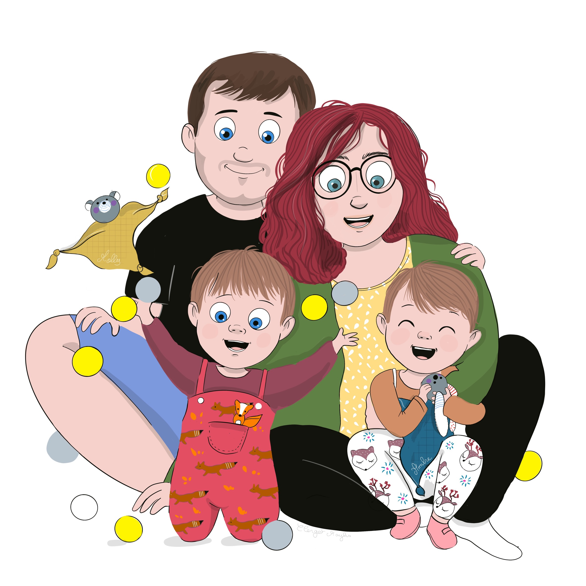
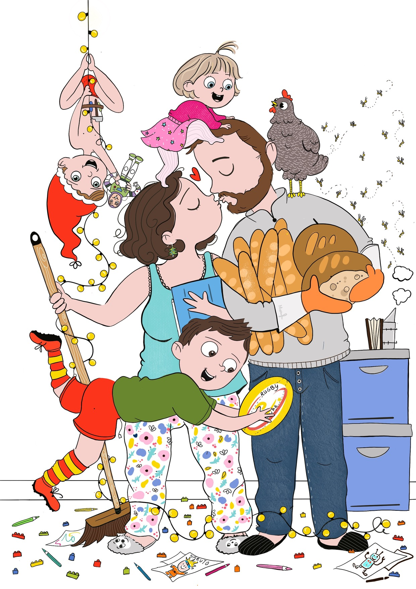
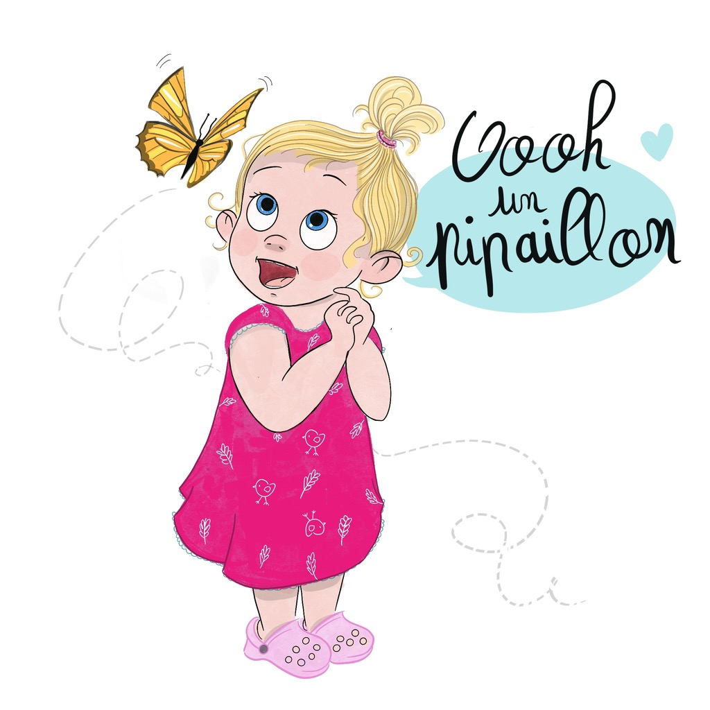
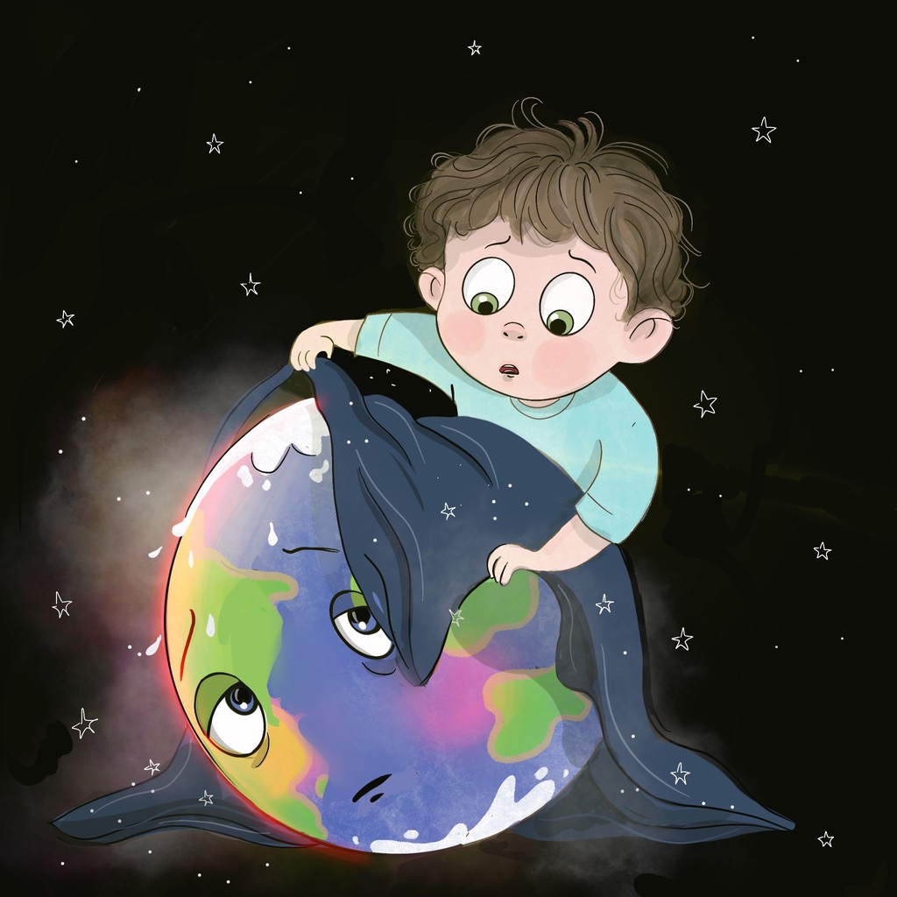
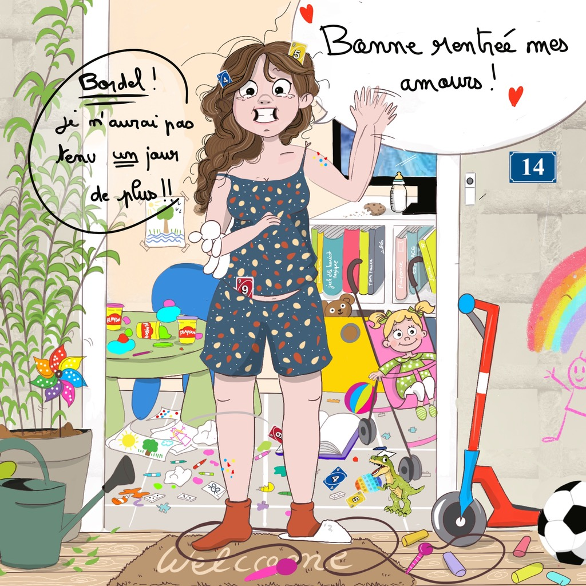
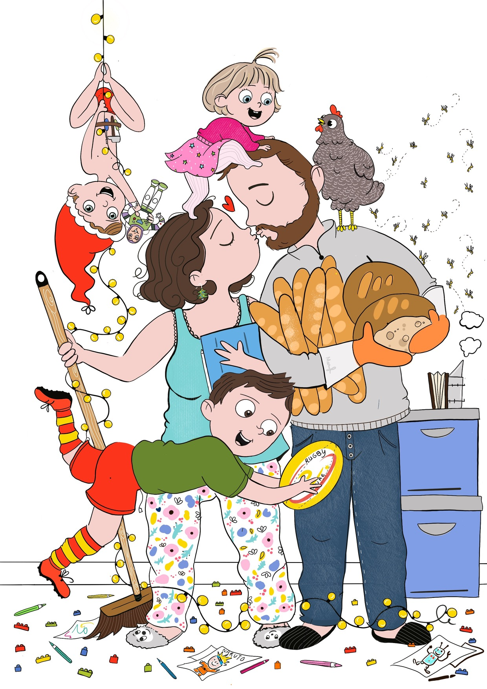
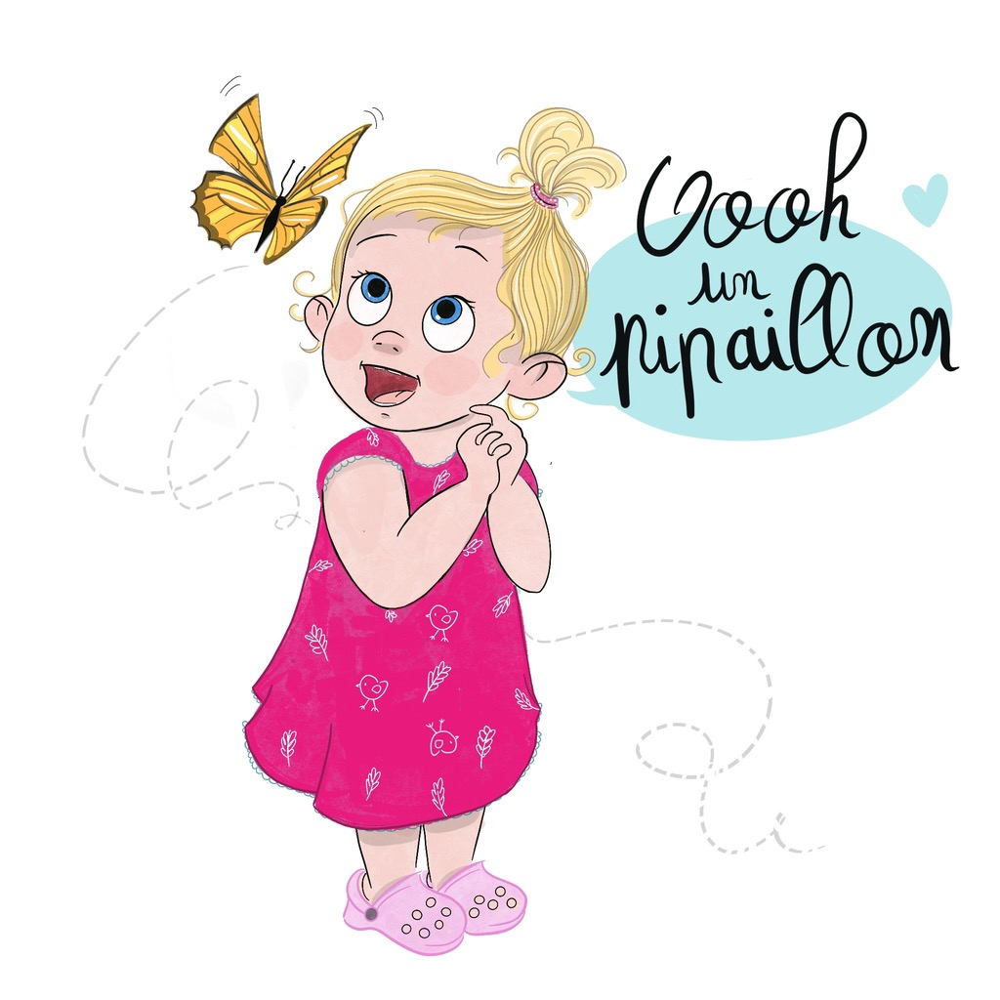
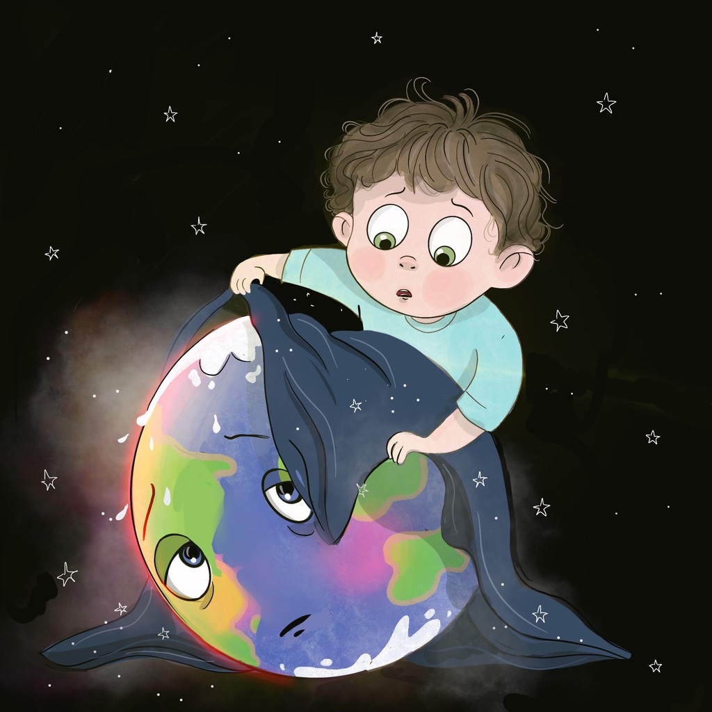
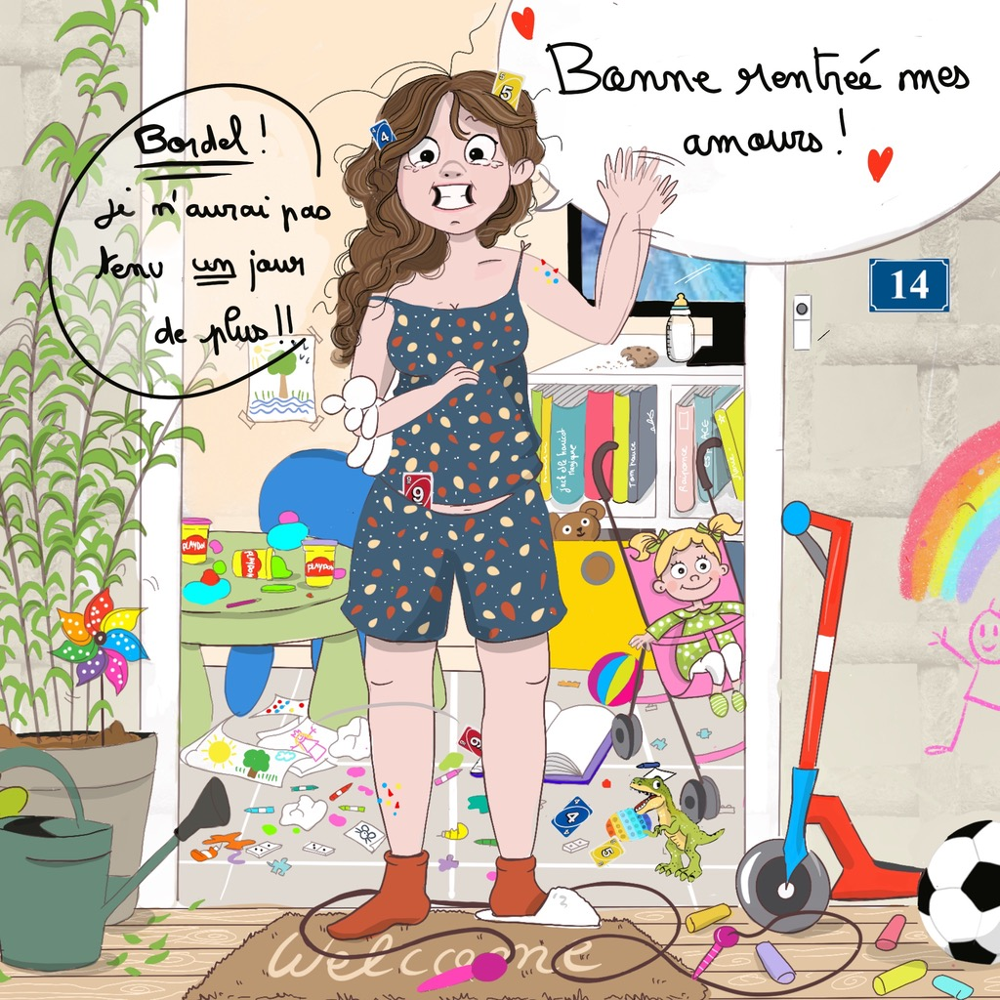

commander


 

 







commander
commander

Comment es-tu devenue illustratrice jeunesse ?
J'ai toujours aimé dessiner et l'univers de la littérature enfantine me passionne ! Je peux passer
des
heures dans une librairie à feuilleter les livres d'illustration jeunesse. Depuis que je suis maman,
mes
enfants sont une véritable source d'inspiration pour moi, c'est donc tout naturellement que je me
suis
tournée vers ce style de dessin !
Comment et où travailles-tu ?
Très souvent je crayonne sur mon canapé, devant un film, une couverture sur les genoux et une
tablette
de chocolat jamais bien loin. Pour la numérisation et la colorisation je travaille sur l'ordinateur.
Je
m'installe donc plus sérieusement à mon bureau.
Quelles sont tes plaisirs à être illustrastrice jeunesse ? Tes grandes joies ?
J'aime découvrir petit à petit l'êvolution de mon dessin. Commencer par un trait au milieu d'une
feuille
blanche sans savoir comment sera l'aspect final ! Mon grand plaisir est de dessiner mes enfants dans
des
scènes rigolotes et parfois touchantes du quotidien !
Que veux-tu transmettre à travers tes dessins ?
La gaieté et la tendresse de l'enfance.
Qui sont tes premiers lecteurs
Mon mari et mes deux garçons. Ces derniers sont mes plus grand fan ! Ils aiment s'installer à coté
de
moi lorsque je dessine et me donner leurs avis et conseils (qui sont précieux pour moi !). Je dis
souvent que ce sont mes "petits inspecteurs des travaux finis".